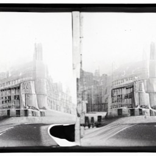
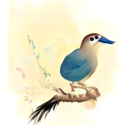
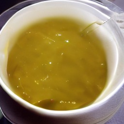
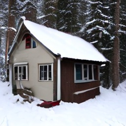
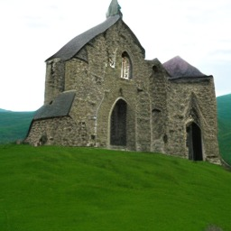
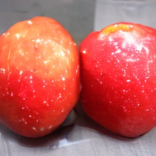
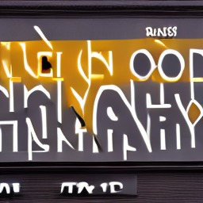
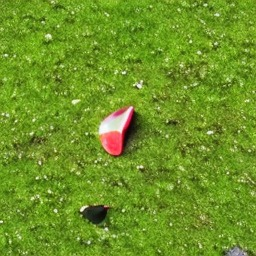

Chitra Tiny / Trained from scratch
A picture from a sentence.
Small enough for a laptop.
A 212M-parameter English text-to-image model. Type a prompt and it paints a 256×256 picture in about three seconds on an Apple-silicon Mac. Chitra (चित्र) means “picture”.
Open weights under Apache-2.0. 0.85 GB.
Trained on about 4.7 million public-domain and CC0 images.
“a lighthouse on a rocky coast at sunset”
One small model.
Best at:
- Photographs
- Paintings & illustrations
- Landscapes
- Buildings
- Vehicles
- Food
01 / What it makes
Twelve prompts.
Twelve first tries.
Each prompt was run once, with seed 0. Nothing here was picked from several attempts, so this is what you should expect for subjects like these.
a lighthouse on a rocky coast at sunset an oil painting of a vase of flowers a mountain landscape with snow and pine trees a sailing ship on a calm sea 
a black and white photo of a city street 
a watercolor painting of a bird on a branch a red car parked in front of a house a bridge over a river in autumn a castle on a hill under a cloudy sky 
a bowl of soup next to a spoon (no spoon) a steam locomotive at a railway station a field of sunflowers on a summer day
Saved on 12 October 2026 from the released weights (guidance 7, 50 steps, 256×256), using make_walkthrough_images.py. Images are shown at their real size of 256×256 pixels, scaled by your browser.
02 / How it works
From noise
to a picture,
in 50 steps.
- 1
Read the prompt.
A text encoder turns the words into 77 vectors that capture their meaning. It is Google’s open Flan-T5-Base, used unchanged.
- 2
Start from noise.
The picture begins as random numbers in a small compressed space. The seed picks which random numbers, so a new seed gives a new picture.
- 3
Remove the noise, step by step.
The Chitra Tiny transformer, the part we trained from scratch, predicts how to move from noise towards a picture that fits the text, and takes 50 small steps. Guidance compares its prediction with and without the prompt and pushes further towards the prompt.
- 4
Turn it into pixels.
An open image decoder (Stability AI’s sd-vae-ft-mse, used unchanged) expands the result into a 256×256 picture.
Try the guidance dial
Same prompt, same seed, different guidance: “a cottage in a snowy forest”.

The default. It scored best on GenEval: the subject is clear and the scene is clean.
Change the seed
Same prompt, same guidance, a different starting noise: “an old stone church in a green valley”.

Each seed is a different, equally valid picture of the same prompt.
03 / The evidence
Convincing scenes.
Weak at composition.
On 5,000 held-out images of the kind it was trained on. It measures how realistic and varied the pictures are. Not comparable to FID on other datasets.
How well each picture matches its caption. Real held-out photos with their own captions score 27.5.
A strict test of specific everyday objects, counts, colours and positions. Stable Diffusion 1.5 scores 0.426 in our same harness.
Where it does well
Photographs, paintings, landscapes, buildings, vehicles and food: the kinds of picture that fill public-domain collections. Its pictures match their captions nearly as well as real photos do.
Where it is behind
GenEval’s everyday objects. On single objects it scores 0.85 for the most common third of them in its training captions, but 0.33 for the rarest third. Two objects, counting and positions are weak.
Is the comparison fair?
Stable Diffusion 1.5 has about four times the parameters and was trained on far more images. GenEval is neutral to both. FID and CLIP use held-out images like Chitra Tiny’s own training data, so they favour it.
GenEval, task by task
Official GenEval code and prompts, 553 prompts × 4 images, 50 steps. Our harness gave Stable Diffusion 1.5 0.426, against 0.43 published by the GenEval authors. At guidance 4, Chitra Tiny scores 0.190.
Full evaluation and method04 / Know the limits
Five things it
gets wrong.
Seed 0, guidance 7, first try, as in the gallery. These are typical of its weaknesses.

Counting three red apples on a table
Two apples.
Text a shop sign that says OPEN
Letter-like shapes, no word.Position a cup to the left of a laptop
A cup, but no laptop.Faces a close-up photo of a smiling woman
Distorted eyes and teeth.
Rare object a frisbee on the grass
A red scrap on grass.
Also: 256×256 only, English only, and no safety filter of its own. Its training images over-represent historic, Western and museum imagery, so expect those biases. Not for depicting real people or for news imagery.
05 / Run it
Your prompt.
Your laptop.
Clone the repository, install six Python packages and run one command. The weights download from Hugging Face on first use, with no login.
Runs on an NVIDIA GPU, Apple silicon or a CPU. Defaults: guidance 7, 50 steps. Use 25 steps to halve the time.
git clone https://github.com/UdgamLabs/chitra-tiny
cd chitra-tiny && pip install -r requirements.txt
python chitra_tiny.py "a castle on a hill" --n 4
# or from Python
from chitra_tiny import ChitraTiny
pipe = ChitraTiny.from_pretrained("UdgamLabs/Chitra-Tiny")
pipe("a bridge in autumn", n=4, seed=0)[0].save("bridge.png")
# local web playground: python app.pyIllustrative usage, taken from the repository README. This page does not execute the code.
Before you use it
A few honest answers.
What does “trained from scratch” mean here?
The diffusion transformer, the part that makes the picture, started from random numbers and learned only from our training images. No weights came from any other image model. It works with two existing open models, used unchanged: Google’s Flan-T5-Base to read the prompt and Stability AI’s sd-vae-ft-mse to turn the result into pixels.
What was it trained on?
About 4.7 million images that their creators released into the public domain or under CC0, each with an automatically generated caption. That is why it is good at photos, art, landscapes and buildings, and weaker at modern everyday objects.
How does it compare with big image models?
It is far behind today’s large models, and about half of Stable Diffusion 1.5 on GenEval. It is a small research model: useful for learning, experiments, fine-tuning and running fully offline on modest hardware.
Will it run on my computer?
Yes. The weights are 0.85 GB. On an Apple-silicon Mac it takes about 3 seconds per image; a recent NVIDIA GPU is faster; a CPU takes tens of seconds.
Is it safe to put in front of the public?
Not on its own. It has no safety filter. The training images come from curated public-domain collections, but add your own moderation for any public-facing use.
Can I use it commercially?
The weights, code and documentation are Apache-2.0, and its two helper models are Apache-2.0 and MIT. Check that its quality and limitations fit your use.
Why is there no online demo?
It is quick to run locally: python app.py opens a web playground on your own machine.
Weights, code and the evaluation
Take a closer look.
Weights and the model card are on Hugging Face. Code, examples, evaluation details and checksums are on GitHub.